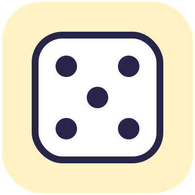

Percorso base · Intermezzo
Il finale perduto
In Animatoon Laboratorio di scrittura creativa: si scrive, si disegna o si racconta a voce

«Psst! Vieni più vicino. Ho una storia da raccontarti, ma c'è un problema: non so come va a finire.
Nei film il finale lo decide il regista. E il regista, qui, sei tu. Ti va di scriverlo?
Questa è una pausa speciale: niente tablet, solo matita, fantasia e un pizzico di magia. Ci sono tre giochi. Puoi farli tutti, o sceglierne uno. Alla fine, la tua storia potrà diventare un film!»
Gioco 1 · La storia di Scintilla (da continuare)
«Una sera, quando l'ultimo spettatore uscì dal cinema e le luci si spensero, io rimasi sola nella sala buia.
Il proiettore era spento. Eppure, in mezzo allo schermo, c'era ancora un puntino di luce che batteva piano: tic, tic, tic.
Mi avvicinai, fluttuando. «C'è nessuno?»
Dallo schermo arrivò un sussurro: «Aiuto! Il nostro film è rimasto senza finale!»
E poi... Plof! Fui risucchiata dentro lo schermo.
Ora sono in un film che non conosco. Intorno a me c'è un mondo strano, e sta succedendo qualcosa di incredibile...
...continua tu!»
Per continuare la storia, rispondi a queste domande (una frase ciascuna, bastano poche parole):
| Domanda | La mia risposta | |
|---|---|---|
| 1 | Dove sono finita? Com'è fatto il mondo del film? | |
| 2 | Chi incontro? Chi vive qui? | |
| 3 | Qual è il guaio? Perché il film non ha un finale? | |
| 4 | Come lo risolviamo? Che magia, che idea o che aiutante serve? | |
| 5 | Come finisce? E io, come torno a casa? |
Il mio finale in una frase: ______________________________________________
Gioco 2 · Il cappello delle storie
«Hai la testa vuota e il foglio pure? Nessun problema! Tira il dado quattro volte, una per colonna, e vedi cosa succede.
Poi riempi la frase magica qui sotto.»
 |
chi è il protagonista? | dove vive? | cosa trova? | qual è il guaio? |
|---|---|---|---|---|
| 1 | una scarpa parlante | un pianeta di gomma da masticare | una chiave senza porta | sparisce tutto il colore |
| 2 | un gigante timido | il cortile della ricreazione, a mezzanotte | una torcia che illumina solo i sogni | tutti parlano al contrario |
| 3 | un cane a righe | un bosco con le foglie di metallo | un ombrello che fa piovere all'insù | arriva un temporale di coriandoli |
| 4 | una nuvola sbadata | dentro un libro di favole | una scatola che ride | l'oggetto scappa via |
| 5 | un robot che ha paura del buio | il fondo di una tazza di cioccolata | un mappamondo che brontola | la luce si spegne all'improvviso |
| 6 | una nonna astronauta | un cinema abbandonato | un cappello che dice bugie | il finale non si trova più |
La frase magica:
C'era una volta ______________________ che viveva ______________________.
Un giorno trovò ______________________, ma... ______________________!
E allora ______________________________________________.
Se la combinazione ti sembra strana, meglio ancora: le storie più belle nascono dalle cose che non vanno d'accordo!
Gioco 3 · La cartolina da dentro il film
«Ora vestiti da attore! Scegli il personaggio della tua storia e scrivimi una cartolina direttamente dal suo mondo.
Raccontami cosa vede, cosa sente, cosa mangia e di cosa ha paura. E non dimenticare il P.S.: lì ci va il segreto che nessuno sa!»
Cara Scintilla,
ti scrivo da ______________________________ (il posto).
Qui si vede ______________________________, si sente ______________________________ e il profumo è di ______________________________.
Oggi mi è successo che ______________________________________________.
Ho un po' di paura di ______________________________, ma ______________________________.
Un abbraccio dal mio mondo, ______________________
P.S. Ti racconto un segreto: ______________________________________________
Dalla storia al film
«Hai scritto una storia? Allora sei a un passo dal cinema!
- Se hai fatto il percorso base: copia il tuo finale, il guaio e l'ambientazione nei tre riquadri della Missione 5 (La trappola del «E poi?»).
- Se sei al livello 2: metti le cinque risposte del Gioco 1 nei cinque riquadri della Missione 9, uno per ogni parte della storia.
Poi disegna i personaggi, costruisci il mondo e registra la tua voce. Sarà il film più originale del mondo, perché l'idea è tua.
Ciak, si scrive!»
Parte riservata a chi ha il libro
Qui ci sono la scheda operativa da stampare, i tutorial e i sussurri per i grandi. Scrivi la parola magica stampata nel libro.